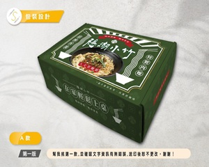

<!-- 商品圖片替換範例 -->
<!-- 將以下程式碼複製到 order.html 中對應的商品卡片 -->

<!-- 禮盒 -->


<!-- 冷凍餛飩 -->


<!-- 冷凍鮮蝦餛飩 -->


<!-- 炸醬冷凍包 -->


<!-- 肉燥冷凍包 -->


<!-- 自製辣椒醬 -->


<!-- 圖片檔案建議命名：
assets/
├── gift-box.jpg          (禮盒)
├── wonton.jpg           (冷凍餛飩)
├── shrimp-wonton.jpg    (冷凍鮮蝦餛飩)
├── zhajiang-sauce.jpg   (炸醬冷凍包)
├── minced-pork-sauce.jpg (肉燥冷凍包)
└── chili-sauce.jpg      (自製辣椒醬)
--> 